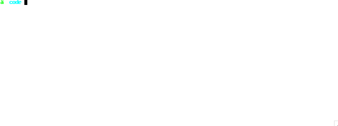

This is just some random documentation for myself in the future or the two other people on the planet who want to mess around with Ocapic on OSX while using Reason instead of Ocaml.
First you need to install all the things, then you need to write your souce code. If all you need is the magic incantion at the end with no explanations:
$ ocapic \
[ <pic> ] \
[ OCAMLC_OPTS ] \
[ OPTIONS ] \
-pp "refmt -parse re -print ml" <source.re.ml> \
-o <source.asm> # manually define output, otherwise all files will be `source.re.`
Install and setup all the things!
- install homebrew.
/usr/bin/ruby -e "$(curl -fsSL https://raw.githubusercontent.com/Homebrew/install/master/install)" - install x11.
brew cask install xquartz - install ocaml with graphics.
brew install ocaml --with-graphics - Download and build ocapic from http://www.algo-prog.info/ocapic/web/index.php?id=OCAPIC:Download
- Install reason. See https://github.com/facebook/reason/blob/master/README.md#installing-via-opam
Compiling Reason with ocapic
The source code here is the first example in the OCaPIC tutorial.
You need the two following files: config.asm, and led.re.ml. The .ml
extension is because the ocapic command requires a .ml file to be passed
in. The .re is a convention I use to set up my editor to read it as a Reason
file
config.asm
config OSC = INTIO7
config PWRT = ON
config BOREN = OFF
config WDT = OFF
config MCLRE = OFF
config PBADEN = OFF
config STVREN = OFF
config LVP = OFF
led.re.ml
(generated by running the tutorial’s led.ml through refmt)
open Pic; /* Module containing write_reg, set_bit, RB0, ... */
{
write_reg TRISB 0; /* Configure the B port as output */
while true {
set_bit RB0; /* Turn on the LED */
Sys.sleep 500; /* Wait 0,5s */
clear_bit RB0; /* Turn off the LED */
Sys.sleep 500 /* Wait 0,5s */
}
};
Now you can generate the bytecode necessary for the PIC microcontroller and emulator by running:
$ ocapic \
18f4620 \
config.asm \
-pp "refmt -parse re -print ml" led.re.ml \
-o led.asm
Running the Emulator
For the OCaml Graphics module, you need to run this file from with
XQuartz. This is what we installed right after
installing homebrew before.
- Open up xquartz
cdto the directory where the above code is located./led ocapic_dip40_simulator
Enjoy
